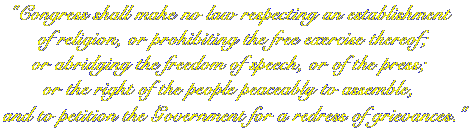

|

Amendment I of the Constitution of the United States of America
Constitution of the United States - Hypertext
The Declaration of Independence
Scanned Originals of Early American Documents
Experience should teach us to be most on our guard to protect liberty when the
government's purposes are beneficent. Men born to freedom are naturally alert to
repel invasion of their liberty by evil-minded rulers. The greatest dangers to liberty
lurk in insidious encroachment by men of zeal, well-meaning but without understanding.
Louis D. Brandeis
There's so much comedy on television. Does that cause comedy in the streets?
Dick Cavett
"Let us contemplate our forefathers, and posterity, and resolve to maintain the rights bequeathed to
us from the former, for the sake of the latter. The necessity of the times, more than ever, calls for
our utmost circumspection, deliberation, fortitude, and perseverance. Let us remember that 'if we
suffer tamely a lawless attack upon our liberty, we encourage it, and involve others in our doom.'
It is a very serious consideration that millions yet unborn may be the miserable sharers of the event."
Samuel Adams ("patriot, statesman, brewer") 1771
"I wrote a song about dental floss but did anyone's teeth get cleaner?"
Frank Zappa, on the "Tipper Sticker"
"The true danger is when liberty is nibbled away, for expedience, and by parts."
Edmund Burke, letter, April 3, 1777, to the Sheriffs of Bristol
"If you will not fight for the right when you can easily win without bloodshed, if you will not fight
when your victory will be sure and not too costly, you may come to the moment when you will
have to fight with all the odds against you and only a small chance of survival. There may even
be a worse case: you may have to fight when there is no hope of victory, because it is better to
perish than to live as slaves."
Winston Churchill
"Whoever undertakes to set himself up as judge in the field of truth and knowledge is
shipwrecked by the laughter of the Gods."
Albert Einstein
"If fifty million people say a foolish thing, it is still a foolish thing."
Anatole France
"The whole principle is wrong; it's like demanding that grown men live
on skim milk because the baby can't eat steak."
Robert A. Heinlein
We should be eternally vigilant against attempts to check the
expression of opinions that we loathe.
Oliver Wendell Holmes, Jr.
"I would rather be exposed to the inconveniences attending too much liberty than
to those attending too small a degree of it."
Thomas Jefferson
"A child should not be discouraged from reading anything that he takes a liking to, from a notion
that it is above his reach. If that be the case, the child will soon find it out and desist."
Dr. Samuel Johnson
"If some books are deemed most baneful and their sale forbid, how then with deadlier facts, not
dreams of doting men? Those whom books will hurt will not be proof against events.
Events, not books should be forbid."
Herman Melville
Conservatives are not necessarily stupid, but most stupid people are conservatives.
John Stuart Mill
(Ooops...prejudicial...the jury will disregard that. Ed.)
"Thoughtcrime was not a thing that could be concealed forever. You might dodge successfully
for a while, even for years, but sooner or later they were bound to get you."
George Orwell, "1984"
He that would make his own liberty secure must guard even his enemy from oppression; for if he
violates this duty he establishes a precedent that will reach to himself.
Thomas Paine
When they took the fourth amendment, I was quiet because I didn't deal drugs.
When they took the sixth amendment, I was quiet because I was innocent.
When they took the second amendment, I was quiet because I didn't own a gun.
Now they've taken the first amendment, and I can say nothing about it.
Unknown
"The function of free speech under our system of government is to invite dispute. It may indeed
best serve its high purpose when it invites a condition of unrest, creates dissatisfaction with
conditions as they are, or even stirs people to anger."
William O. Douglas
"The liberation of the human mind has been best furthered by gay fellows
who heaved dead cats into sanctuaries and then went roistering down
the highways of the world, proving to all men that doubt, after all,
was safe--that the god in the sanctuary was a fraud."
H. L. Mencken
"If I had a large amount of money I should found a hospital for those whose grip upon the world
is so tenuous that they can be severely offended by words and phrases yet remain all unoffended
by the injustice, violence and oppression that howls daily about our ears."
Stephen Fry
"All censorships exist to prevent any one from challenging current conceptions
and existing institutions. All progress is initiated by challenging current conceptions,
and executed by supplanting existing institutions. Consequently the first condition
of progress is the removal of censorships."
George Bernard Shaw
"I disapprove with what you say, but I will defend to the death your right to say it."
Evelyn Beatrice Hall, paraphrasing Voltaire
"Civil liberties are always safe as long as their exercise doesn't bother anyone."
New York Times editorial, 1-3-41
"Of all tyrannies a tyranny exercised for the good of its victims may be the most
oppressive. It may be better to live under robber barons than under omnipotent moral
busybodies. The robber baron's cruelty may sometimes sleep, his cupidity may at some
point be satiated; but those who torment us for our own good will torment us without end
for they do so with the approval of their own conscience."
C.S. Lewis
"We are not afraid to entrust the American people with unpleasant facts, foreign ideas,
alien philosophies, and competitive values. For a nation that is afraid to let its people
judge the truth and falsehood in an open market is a nation that is afraid of its people."
John F. Kennedy
"The Bill of Rights is a born rebel. It reeks with sedition. In every clause it shakes
its fist in the face of constituted authority. It is the one guaranty of human freedom
to the American people."
Frank I. Cobb, 1920
In La Follette's Magazine
"I believe we are on an irreversible trend toward more freedom and democracy.
But that could change."
Former Second Banana Dan Quayle
"Unfortunately, the civil liberties types who are fighting this issue have to
fight it, owing to the nature of the laws, as a matter of freedom of speech
and stifling of free expression and so on. But we know what's really involved:
dirty books are fun! That's all there is to it. But you can't get up in a court
and say that, I suppose. It's simply a matter of freedom of pleasure, a right which
is not guaranteed by the Constitution, unfortunately."
Tom Lehrer - The Introduction to "Smut"
 Coda
CodaRay Bradbury's Introduction to the 1979 edition of "Fahrenheit 451"